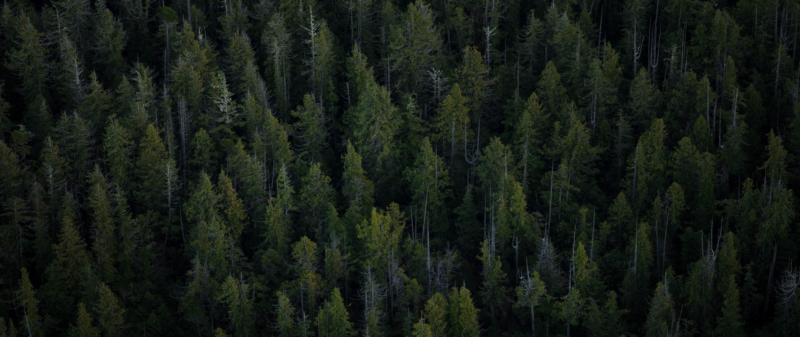

Has Canada's Environment Improved in the Last Decade?
In the last decade there's been an increase in environmental awarness in Canada, but has this positively impacted the environment?
Air Quality
Carbon Monoxide reacts with Hydroxyl (OH) radicals in the atmosphere which reduce their abundance. This is detrimental for the environment as Hydroxyl helps reduce greenhouse gases such as methane. Which in turn leads to an increase in the earths temperature. Therefore, the observable decrease in Carbon Monoxide in the air over the past few years is a very positive sign for the environemnt.
Nitrogen Dioxide is harmful for the environment as it reacts to form acid rain. Which is very harmful for forests, and the ecology of the environment it interacts with. It also has negative effects on vegetation such as leaf damage and slowed down growth. The apparent trend of this gas decreasing over the years is a positive sign for the quality of our air.
Water Quality
Pollution spills harm wildlife and the surrounding ecosystems they enter. In addition to this, they're incredibly expensive and time consuming to clean up. Relative to the peak in 2011 we can see a general decrease in the amount of pollutant spills, other than in 2016 which is an outlier. We can also see that the majority of the spills are coastal. This is a good indicator as coastal spills are easier to clean up. This is because oil that seaps into the sands of the coasts are easier to contain. Transportation of assistance is also easier for coastlines as opposed to bodies of water.
Black Oysters are very vulnurable to disturbences in their environment. Which makes them a good indicator of the quality of their surroundings. This is especially notable as there is an observable decrease in their population during the major oil spill that took place in Alberta in 2011. The recovery in their population and increased ratio of pairs per km is a positive indicator. Pollutant spill cleanup efforts and heightened regulations have caused the water quality to have consistent improvement. Which is reflected in the increase of Black Oyster populations as they return to previous highs.
Land Quality

One of the primary issues in terms of the environment is climate change. The staff at the Torngat National Park have been monitoring the temperature of the soil using data loggers buried at a depth of 10 cm around the park. Unfortunately these devices show a clear uptrend in the temperature of the soil over time. This is problamatic for the environment as many plants are sensitive to temperature. The increase in soil temperature at the park is consistent with our fears of climate change and the earth getting warmer.
One of the reprecussions of climate change is that as temperatures increase, there is a higher chance of forest fires. This is reflected in the data where we can see a recent increase in forest fires. This is also consistent with the previous observation where soil temperatures were increasing. indicating that average temperatures are increasing due to damage of the ozone layer.
Mountain goats are one of the most vulnurable animals to climate change, as the changes in temperature affect snow depth. The snow influences how the goats forage, and behave in their environment. Therefore, observing their population numbers can give us insight into how drastically climate change is affecting wildlife. Observing the chart we can see that the population peaked around 1995 and has yet to return to these levels. The decline from 1995 to 2008 is concerning but it's good to see that the trend seems to be changing as the population has begun to increase again. It is concering to see how susceptible wildlife population is to their climate, and to see the mountain goats population in particular decline so rapidly.
Conclusion
Looking at Canada's environmental data has been an eye opening experience. The most pleasent surprise was the countries air quality, and how drastically it improved. One of my major concerns were pollutant spills in water, as just within this decade we've witnessed disasterous oil spills in Alberta. The decrease in pollutant spills and the stabilization of the Black Oyster population show that Canada is taking strong steps towards ensuring that our waters stay pristine. The only negative indicator in the data was the increase in overall temperature that was observed in Torngat National Park. Confirming that damage to the ozone layer has affected our climate. This is also consistent with the increase in forest fires observed in Prince Edward National Park. A reassuring sign in contrast to these findings was that the Mountain Goat population was restabilizing. The Mountain Goat being a species that is so sensitive to climate change restabilizing it's populations is a positive sign that our efforts to improve the environment are not in vain. Ultimately I am happy to see that based on the data Canada's environment is consistently improving.